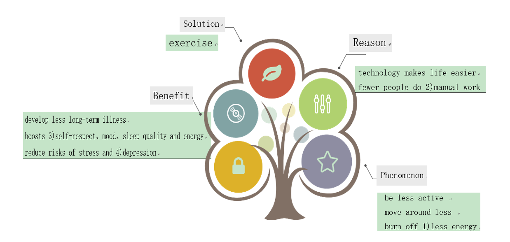

Listening and Speaking
Text Analysis
The content of this lesson is drawn from the "14th Five-Year Plan" vocational education national planning textbook published by Higher Education Press, "English 2 Basic Module," focusing on Unit 2's listening and speaking section. It requires students to be able to communicate about medical consultations, provide relevant advice on health issues, and devise appropriate strategies for health consultations based on real situations.
Student Analysis
This lesson's target audience is first-year students at vocational high schools. After nine years of compulsory education, they have a basic reserve of English knowledge. However, there is a significant disparity: some students are very interested in learning and can communicate fluently in English; others are less interested and hesitant to speak. Therefore, teachers should design their teaching activities appropriately, starting from easy to difficult, from simple to complex, transitioning from mechanical imitation to substitution exercises, and then to practical language use, gradually laying the groundwork to minimize potential difficulties and frustrations. After initial English lessons, students can use common terms like headache, fever, toothache, and stomachache to describe health conditions, and they understand some sentence patterns for inquiring about health and giving reasonable advice, but further learning is still needed.
Instructional Objectives
Students should be able to understand dialogues about health issues
and hospital visits, and extract key information.
Students should be able to use sentence patterns related to
different lifestyles to discuss maintaining health and enhance
awareness of health issues.
Students should be able to provide suitable consultation advice and
medical opinions based on key information, fostering a caring
attitude towards others.
Key and Difficult Points
Key points: Being able to communicate based on different health
issues and provide suitable advice.
difficult Points: Proficient use of sentence patterns for consulting
about health issues and giving medical opinions.
Teaching Procedure
Step 1: Warming Up
*1. Act & Guess.
Activate vocabulary: Students act out physical discomfort and other
students guess and state the related English words. Teachers may
provide pictures as prompts to activate thinking.
Address textbook activity 1. Attempt to use gestures for "allergy"
and "under pressure" and have students say them in Chinese.
2. Think and describe.
Handle textbook activity 2, which can be divided into two
steps:
(1) Present a scenario: You meet a friend, notice his discomfort,
inquire and offer advice.
(2) The teacher presents information on
common symptoms and sentence patterns for inquiries and advice.
Students use key information and sentence patterns to engage in
simple scenario dialogues, cultivating a caring nature.
| Information Element | Common phrases and sentence patterns |
|---|---|
| Signs of unwellness | feel tired feel worried have a sour throat lose your temper |
| You may ask | -You don`t look well. What`s wrong with you? -I… -You should… |
| Your suggestion | see a doctor drink plenty of water have a good rest ask others for help |
Step 2: Listening
1.Listen and tick.
Address textbook activity 3. Before listening, students identify scenes in option images and predict the listening content. Then, listen to the recording, make selections based on the options, and grasp and judge the listening material overall. After listening, the teacher checks and provides feedback.
2. Listen and decide.
Handle textbook activity 4. Students first read the options for preliminary judgment. Then, listen to the recording, identify key words, judge correctness, and correct misinformation. After listening, the teacher checks and provides feedback.
3. Listen and complete.
Handle textbook activity 5 in two steps:
(1) Students first preview the medical record form, determine the information needed (symptoms, duration, causes, and suggestions), then listen to the recording, note relevant information, and complete the form. After listening, the teacher checks and verifies answers, presents the listening text, and briefly analyzes key information.
(2) Extension activity: The teacher adds the following extension questions, and students raise their hands to answer:
Can you give some suggestion to Jack? (He can sleep early and take a lot of rest.)
What can you do for Jack if he asks for help? (I can finish his work together with him.)
(Design intent: This step aims to train students to predict the listening content based on available information, gather and summarize key information during listening, focusing on developing students' language communication and interactive skills, and learning to care for others.)
Here's the translation of the text from Chinese to English:
Step 3: Speaking
1. Listen, read, and underline.
(1) Handle textbook activity 6. The teacher introduces the background of the dialogue, students listen to the recording, read along, and underline sentences related to medical consultations. Then, two students perform the dialogue.
(2) Extension activity: The teacher briefly explains the following key phrases and sentence structures. On this basis, students focus on practicing these sentence patterns:
- appointment number, have a sore throat, have a terrible cough, have a bad cold, take medicine, have a good rest, heavy food, do more exercises, avoid, recover
Examples of key phrases:
- Here is my appointment number.
- What’s wrong with you?
- How long have you been like this?
- I’m afraid you have…
- What can I do about it?
- What else should I pay attention to?
- When can I recover from it?
- It will take…
2. Imitate and practice.
Handle textbook activity 7, which can be divided into two steps:
(1) Preliminary activity: Students compete in groups, listing reasons and suggestions based on symptoms. Each correct answer earns one point.
| stomachache | fever | toothache | under pressure |
|---|---|---|---|
| don`t look well look pale feel terrible drink hot water keep warm |
feel cold headache muscle pain drink plenty water take a good rest |
have a decayed tooth can`t bite anything eat too much sweet brush teeth carefully see the dentist eat less sweet |
feel upset a bad temper be tired of work don`t feel like talking ask partners for help sleep early find and enjoy happiness everyday |
Reference Answers:
- Patient: Good morning, Sir. Here is my appointment number.
- Doctor: Thank you. So, what’s wrong with you?
- Patient: I have a toothache.
- Doctor: I see. How long have you been like this?
- Patient: Since last Friday.
- Doctor: Please open your mouth. Hmmm, I’m afraid you have a decayed tooth.
- Patient: What can I do about it? I feel really bad.
- Doctor: Well, take this medicine one tablet three times a day and brush your teeth twice a day.
- Patient: What else should I pay attention to?
- Doctor: You’d better eat less sweet food.
- Patient: Thank you. When can I recover from it?
- Doctor: Well, it’ll take about one week.
3. Role play.
(1) Handle textbook activity 8. Assume you are a staff member at the school health office, responding to students' health inquiries.
Examples of student descriptions and advice:
| Student 1 | Student 2 |
|---|---|
| - ^be overweight - ^like to eat hamburgers, popcorn, and heavy food - ^like to drink colas |
- ^have a sore neck - ^have dry eyes - ^eyes glued to the mobile phone / laptop - ^sit without moving |
| - ^control weight - ^be physically active - ^avoid junk food - ^eat more healthy food |
- ^protect your eyes and neck - ^control the overuse of electrical devices - ^do more physical exercises |
(At the School Health Center)
- Staff: Welcome to the School Health Center. What can I do for you?
- Student: Well, I had a school physical examination last week, and the health report said I am overweight. What can I do about it? I feel really terrible.
- Staff: What do you usually have for dinner?
- Student: I like to eat hamburgers, popcorn, and heavy food. And I like to drink colas.
- Staff: That might be the reason. Well, if you want to control weight, you’d better avoid junk food. What’s more, do more exercise and be physically active.
- Student: Thanks for your advice. I’ll follow them. Bye.
- Staff: You are welcome. Wish you could lose your weight and become healthy. Bye-bye.
(2) Extension activity: Continue to provide health advice to other students based on the following information.
| Student 1 | Student 2 | Student 3 | Student 4 |
|---|---|---|---|
| don`t look well look pale feel terrible |
feel cold headache muscle pain |
have a decayed tooth can`t bite anything eat too much sweet |
feel upset a bad temper be tired of work don`t feel like talking |
| drink hot water keep warm |
drink plenty water take a good rest |
brush teeth carefully see the dentist eat less sweet |
ask partners for help sleep early find and enjoy happiness everyday |
Step 4: Conclusion
Guide students to discuss the following two questions, combining with the listening and speaking micro-course from Unit 2 of the textbook, to summarize what they've learned:
- How can we get information about personal health?
- What else can we do to stay healthy?
- Guide students to discuss the following
two questions, combining with the listening and speaking micro-course from Unit 2 of the textbook, to summarize what they've learned:
- How can we get information about personal health?
- What else can we do to stay healthy?
Step 5: Homework
1. Design a health survey questionnaire and invite classmates, teachers, and family members to participate in their own health assessment.
2. Extension homework: Record a “Health Advisor” video.
(1) In teams of 2 to 3 students, select a health issue based on the survey results, and create a video to demonstrate the correct solution and exercise methods, then upload it to the learning platform or class group.
(2) Conduct a class vote to select two of the best “Health Advisor” team projects.
Reading and Writing
Text Analysis
The teaching content for this lesson is taken from the reading and
writing section of Unit 2 of the textbook.
Students are expected to understand short texts about modern health
issues and extract key information, become
familiar with and master the key points of writing online replies,
and be able to complete replies to posts in
the health column of a website as instructed.
Student Analysis
After the first two lessons, students are now able to communicate
about various health issues and provide
reasonable advice using common sentence patterns. Meanwhile,
students have a basic understanding of the
importance of maintaining health and need to further extract more
information about the importance of exercise
in maintaining physical and mental health from the texts.
Instructional Objectives
Students should be able to understand articles about health issues
and the importance of exercise, and extract
key information for reasoning and judgment.
Students should be able to complete a mind map about health issues
and reply to posts in the health column of
a website as prompted.
Students should be able to engage in self-evaluation and post-lesson
reflections to develop good learning
habits and improve their language learning and application
skills.
Key and Difficult Points
Key Point: Ability to familiarize with and apply skimming and
intensive reading techniques to understand the
content of articles, mastering the vocabulary and sentence
structures commonly used to describe modern health
issues.
Difficulty: Ability to extract key information from reading passages
and use relevant vocabulary and sentence
structures to complete replies to posts in the health column of a
website.
Teaching Procedure
Before class:
Extension Activity: Students complete a questionnaire about daily
exercise and living habits distributed by
the teacher before class. The questionnaire includes:
How long can you take a walk every day?
Do you wash your clothes by hand?
How many hours are your eyes glued to your phone every day?
During class:
Step 1: Preview
Extension Activity: Invite the winner of the "Best Health Advisor"
team to present to the class, followed by
teacher and student feedback.
Invite students to introduce the results of their health check-ups,
encouraging everyone to pay attention to
their own health and the health of those around them.
Step 2: Pre-reading
1.Think and discuss.
Handle textbook activity 9 in two steps:
(1) Students discuss the benefits of exercise for physical and
mental health based on their own experiences,
laying the groundwork for subsequent reading activities.
(2) Extension Activity: The teacher invites students to share the
results of the questionnaire. Students
discuss and consider how to engage in positive exercise.
(Design Intent: This section starts by introducing the results of
health check-ups, reviewing the content from
the previous two lessons, and assessing the students' learning
outcomes. The goal is to guide everyone to
focus on their own health and that of people around them. Students
familiarize themselves with key vocabulary
through discussions on the benefits of exercise, thereby deepening
their understanding of the importance of
regular exercise for maintaining health.)
Step 3: While-reading
1.Read and choose.
Handle textbook activity 10 in two steps:
(1) Students quickly skim through the article to determine the main
purpose of the writing.
(2) Extension Activity: Students consider the main idea of each
paragraph and find supporting statements in
the text.
| paragraph | 1st | 2nd | 3rd |
|---|---|---|---|
| General Idea | People are less active nowadays. | People ignore that exercise is a great cure. | Being physical active can help people lead a healthier and happier life. |
| Evidence | Technology has made our lives easier | Exercise is a great cure we have always had, but sadly we have ignored it for too long. | Fewer chances to develop many long-term illnesses. |
(1) Handle textbook activity 11. Students read the article again and complete a mind map related to modern health issues.
| Phenomenon | be less active move around less burn off 1)less energy |
|---|---|
| Reason | technology makes life easier fewer people do 2)manual work |
| solution | exercise |
| Benefit | develop less long-term illnesses boosts 3)self-respect、mood、sleep quality and energy reduce risks of stress and 4)depression |
 (Design intent of this activity is to focus on cultivating students' ability to quickly find key words during reading, closely read to compare, analyze, and extract key information, thus interpreting the content of the text through marking key information, finding supporting sentences, comparing and analyzing detailed information, and summarizing main features.)
Step 4: Post-reading
1.Read and Decide.
Handle textbook activity 12. Students extract detailed information from the text, mark key words, expand their understanding of sentence details, and judge the accuracy of the information and correct it.
(1)Many people are burning off more (less) energy because their life is busier (easier) than before.
(2)Modern health problems may include being overweight, moving around less, and having too much work pressure.
(3)Exercise is one of the best ways to keep people away from modern health problems. 2.Read and Reorder.
Handle textbook activity 13, which can be divided into two steps:
*(1)Preliminary Activity: Students find key words that connect the context based on five sentences about health from the text.
| Sentence | Key Information |
|---|---|
| First, exercise can reduce people`s chances to develop heart disease or cancer.（A） | first |
| What is more, exercise can reduce people`s risk of suffering from stress and depression.（B） | what is more |
| Exercise can help people lead a healthier and happier life（C） | healthier and happier life |
| All in all, exercise would be the best medicines ever invented to improve people`s life quality.（D） | all in all |
| Second, exercise can boost people`s self-respect, mood, sleep quality and energy.（E） | second |
C => A => E => B => D
(The design intent here is to improve reasoning and understanding of logical relationships of sentence details by getting detailed information from the text and making judgments, building on the previous activity.)
Step 5: Writing
Read and Reorder.
Handle textbook activity 14. Students read posts from the health column on a website and reply based on the health issues mentioned in the posts, which can be divided into two steps:
(1) Quickly read the post to find the health issues of the inquirer.
(2) Read the reply posts, deduce the content of the replies by identifying key information, and give reasonable advice.
| Key Information | Possible Answer |
|---|---|
| be physically active | 1) do more exercises |
| be related with being overweight | 2) eat healthily for keeping fit |
| Don;t ne ashamed of yourself | 3) enjoy yourself in taking some exercise |
| your energy and sleep quality | 4) boost your mood |
Writing Evaluation Criteria:
Is the use of relevant vocabulary and sentence structures for giving advice correct?
Can the advice provided answer the inquirer's questions?
Is the reply clear and logical?
Is the grammar correctly used?
Are the words spelled correctly?
(The design intent of this step is a writing activity, where the teacher guides students to replicate replies using the language knowledge they have learned, based on repeatedly studying the reading materials, and mastering the basic format of replying to posts on websites.)
Step 6: Conclusion.
The teacher guides students to combine the micro-lessons of the reading and writing sections of this unit to summarize what has been learned. Step 7: Homework. Health Advisor
Students design a daily health plan for the inquirer, helping them recover health from aspects of diet and living habits, and share it with classmates.
Language Practice & Vocabulary
Text Analysis
The main content of this lesson includes the Language Practice and Vocabulary sections of the textbook. Through observation and identification, students will master the sentence patterns "subject + linking verb + complement", "subject + verb + object + adverbial" and the basic usage of the "There be" structure. The unit's key vocabulary is derived from the listening and reading materials of this unit. Students will master the key vocabulary of the unit by using phrases and words in specific contexts. Teachers can further explain and organize student practices and assessments to consolidate the learned content.
Student Analysis
After last semester's English study, students have mastered the basic tenses and have a certain understanding of some English grammatical phenomena. However, they are not clear about the composition and usage of the "subject + linking verb + complement" and "subject + verb + object + adverbial" sentence patterns. They have a basic understanding of the "There be" structure, but their grasp of the subject-verb agreement principle is not solid. Teachers can help students construct knowledge structures and understand their internal connections through example sentences and sentence patterns, thus enabling them to more accurately recognize and use them. For vocabulary learning, teachers should pay attention to creating contexts to help students master the application of vocabulary.
Instructional Objectives
(1) Master the basic usage of the sentence patterns
"subject + linking verb + complement",
"subject + verb + object + adverbial" and the "There be"
structure.
(2) Accurately use the "There be" structure in specific contexts and
choose the correct form of the verb "be".
(3) Through the study and practical application of grammar, students
will develop good learning habits and improve their pragmatic
abilities.
Key and Difficult Points
Key Points: Master the basic usage of the sentence patterns
"subject + linking verb + complement",
"subject + verb + object + adverbial", and their structures.
Difficulties: Accurately use the "There be" structure in specific
contexts.
Teaching Procedure
Step 1: Warming-up
1. Brainstorm: Students recall the related knowledge of the
"subject + verb + object", "subject + linking verb + complement"
sentence patterns, and the "There be" structure, leading to example
sentences of the "subject + verb + object + adverbial" pattern.
*2. Students watch the grammar micro-lesson video of Unit 2,
recalling key knowledge from the previous Brainstorm activity.
(Design Intent: Help students list the related knowledge of the
"subject + linking verb + complement",
"subject + verb + object + adverbial", and "There be" structures,
preparing for the systematic consolidation of this fragmented
knowledge.)
Step 2: Presentation
1. Read and classify.
Handle textbook activity 15 in five steps:
(1) Students mark the "subject + linking verb + complement",
"subject + verb + object + adverbial", and "There be" structures in
six given sentences.
(2) Through observation, comparison, and analysis, students identify
and classify the sentence patterns, and the teacher summarizes the
composition and usage of the three patterns.
(3) Students understand the meanings of sentences and classify them
according to sentence structure, filling in a table. The teacher
checks the answers and explains.
(4) The teacher explains the subject-verb agreement principle of the
"there be" structure using example sentences:
There were (be) two meetings yesterday.
There is (be) a pen, two books, and many pencils on the desk.
There are (be) two books, a pen, and many pencils on the desk.
(5) Based on understanding the three sentence patterns, students
each create three sentences.
(Design Intent: This activity requires students to master and judge
the "subject + linking verb + complement",
"subject + verb + object + adverbial", and "There be" sentence
structures through observation, comparative analysis, and
summarization, and to understand the pragmatic functions these
sentences carry based on context.)
Step 3: Practice
1. Read and reorder.
Handle textbook activity 16, where students observe the components
of given sentences and combine them according to the
"subject + linking verb + complement",
"subject + verb + object + adverbial", and "There be" sentence
structures.
2. Read and complete.
Handle textbook activity 17 in two steps:
(1) Students observe the given options, assess the sentence
structure, and understand their meanings in context, with teachers
posing questions based on student levels.
(2) Students select the appropriate sentences to fill in a dialogue,
judging logical consistency with the context.
(Design Intent: This section requires students to focus on using and
consolidating the "subject + linking verb + complement",
"subject + verb + object + adverbial", and "There be" structures in
practice, enhancing their comprehensive language application skills
and developing summarization habits.)
Step 4: Practice
1.Choose and complete.
Handle textbook activity 18 in two steps:
(1) Together, teacher and students review phrases related to
consulting and responding to health issues from this unit, focusing
on the phrases given in textbook activity 18.
(2) Students choose the appropriate phrases and complete a text
using their correct forms.
2. Read and complete.
Handle textbook activity 19 in two steps:
(1) Together, teacher and students review vocabulary related to
consulting and responding to health issues from this unit.
(2) Students choose the appropriate forms of the given vocabulary to
complete a text.
(Design Intent: This activity provides students with specific
contexts to practice using phrases and words, consolidating the
language points of the unit and achieving real-world
application.)
Step 6: Homework
Based on the content of this lesson, attempt to design a mind map
about the sentence patterns learned in this lesson and the key
vocabulary of the unit.
Culture Understanding &Group Work
Text Analysis
This lesson integrates the "Culture Understanding" and "Group Work" sections of the textbook. The "Culture Understanding" section introduces the differences between Chinese and Western medical consultation methods, explores the profound use of Traditional Chinese Medicine (TCM) abroad, and aims to enhance national pride. The "Group Work" section guides students through reading charts about fatigue indices and screen time across different countries to understand the health issues caused by modern lifestyles, thereby enhancing their awareness of health and the importance of exercise, and developing their problem-solving skills.
Student Analysis
After a unit of study, students have mastered how to obtain information about personal health, can discuss people's lifestyles and express views on maintaining health, can understand articles about health and find key information for judgment and reasoning, and can use relevant vocabulary and sentence patterns to write simple health maintenance advice. However, students have limited exposure to chart-based reading tasks and face difficulties in extracting key information from images and completing related questions.
Instructional Objectives
Understand the profound nature of TCM and its origins and characteristics, introduce the advantages of TCM in
treating COVID-19, and foster national pride.
Read charts and extract key information through analysis to summarize health advice.
Foster awareness of personal health and establish the concept that exercise is beneficial to health.
Through self-assessment, summary, and reflection on learning methods and strategies, develop good learning
habits and improve language learning and application abilities.
Key and Difficult Points
Key Points: Understand the distinctive treatment characteristics of TCM "tailored to the individual" and its
advantages in treating COVID-19 sequelae.
Difficulties: Reading charts and extracting key information to address questions related to fatigue indices,
average daily working hours, and average daily screen time, and summarizing health advice.
Teaching Procedure
Before class:
Students read the "Culture Understanding" section of the textbook and, combined with online search results, organize information related to the following questions:
Do you know anything about TCM?
What's the difference between TCM and Western medicine treatment?
(Design Intent: Pre-class preparation of relevant information will help students further understand the profound nature of TCM and its treatment characteristics, and prepare them for the introductory activity in class.)
During class:
Step 1: Warming-up
1.Discuss and fill:
*(1) Students share their knowledge of TCM gathered before class and discuss the differences between Chinese and Western medical treatments.
(2) Groups find and discuss the origins, characteristics, and advantages of TCM in treating COVID-19 sequelae.
(3) Groups report their discussion results.
| Origin | An ancient system of health care that dates back more than 2000 years. |
|---|---|
| Characteristic | National treasure Gives and adapts therapies based on the health status of each individual |
| Curable | COVID-19 sequelae: fainting, severe headaches, and dizziness |
Step 2: Practice
Group work:
1. Groups discuss the daily use of electronic devices and various consequences, such as:
How long do you spend on your electronic products every day?
How do you feel after long-time use of your phone?
2. Handling the Group Work Activity 1's chart and Activity 2's text segment in two parts:
(1) Students observe the information displayed in the chart, including the names of countries and numerical data, and guess the meaning of "Fatigue" based on the "Score" they are familiar with in the title; this is followed by group discussions and exchanges.
(2) Students read the text segment and complete the information in reference to the chart.
3. Handling the Group Work Activity 1's chart and Activity 2's text segment in two steps:
(1) Students observe the information in the chart showing country names and numbers, and guess the meanings of "Annual" and "per day" in the title; discussions in groups follow and then sharing.
(2) Students read the text segment and fill in the missing information by referring to the chart.
4. Combine given charts and passages to discuss potential health issues and reasonable suggestions, providing at least two answers per question.
(Design Rationale: This activity requires students to use the language knowledge mastered in the unit to complete simulation tasks within specific contexts, guiding students to understand the health issues caused by changes in modern lifestyles through chart information, enhancing their awareness of health and exercise, and developing their problem-solving abilities.)
Step 3: Conclusion
Self-assessment:
1. Review vocabulary clouds to check mastery of unit words and phrases.
2. Fill out a table to evaluate your own performance based on the unit's learning.
(Design Rationale: Using vocabulary clouds, students can assess their mastery of unit vocabulary and phrases, identify areas for improvement, strengthen autonomous learning awareness, and develop learning plans tailored to their characteristics while engaging in self-assessment, summary, and reflection, promoting sustainable development of language learning and abilities.)
Step 4: Homework
Design a "Health & Fitness---Something we should know" wall newspaper and submit it to the school's public account.